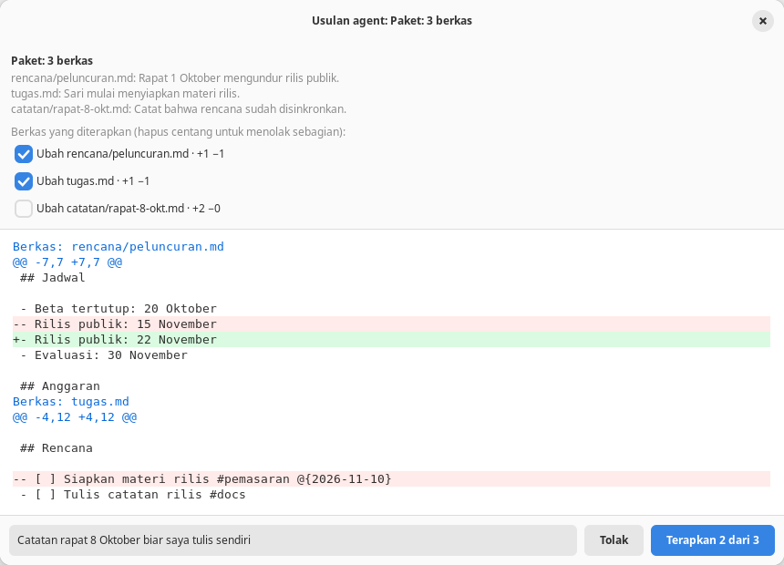

Agent
Usulan dan persetujuan
Agent tidak pernah menulis sendiri. Setiap tindakan menjadi usulan dengan selisih yang Anda tinjau; berkas baru tersentuh setelah Anda menekan Terapkan.

Tindakan yang bisa diusulkan
| Alat | Tindakan |
|---|---|
buat_berkas | Berkas Markdown baru; setelah diterapkan langsung dibuka di tab |
ubah_berkas | Ganti potongan teks persis yang muncul tepat sekali, atau setiap kemunculan dengan semua: true |
sisip_teks | Sisipkan teks di awal berkas (setelah frontmatter), di akhir, atau setelah baris tertentu. Nomor baris harus disertai isi baris itu, jadi salah hitung ditolak |
hapus_berkas | Buang berkas ke Tempat Sampah, bukan menghapus permanen |
pindah_berkas | Ganti nama atau pindah folder; dokumen yang terbuka mengikuti path barunya |
ubah_kanban | Kartu: tambah, pindah, tandai, ubah, hapus. Daftar: tambah_daftar, ganti_nama_daftar, hapus_daftar (hanya daftar kosong) |
usulkan_paket | Sampai 20 tindakan di atas sekaligus, ditinjau dalam satu jendela |
Jendela tinjau
- Terbuka otomatis saat agent mengusulkan, dengan alasan di atas dan selisih berwarna bergaya diff Git: nomor baris, tiga baris konteks, dan beberapa hunk.
- Tombol Tolak dan Terapkan. Menutup jendela sama dengan menolak.
- Di panel tertinggal kartu ringkas berstatus dengan tombol Tinjau perubahan untuk membukanya lagi.
- Hasil Terapkan, Tolak, galat, atau Hentikan dikirim balik ke agent, jadi agent tidak memaksa setelah ditolak.

Paket dan persetujuan sebagian
Untuk pekerjaan yang menyentuh beberapa berkas, agent memakai usulkan_paket. Semua diff tampil dalam satu jendela dengan kotak centang per berkas.
- Hapus centang untuk menolak sebagian; tombol berubah menjadi Terapkan 2 dari 3.
- Agent diberi tahu berkas mana yang diterapkan dan mana yang ditolak.
- Beberapa perubahan pada berkas yang sama digabung menjadi satu diff.
- Berkas yang dihapus atau dipindah tidak boleh disentuh tindakan lain di paket yang sama, sehingga tiap berkas aman diterapkan sendiri.
- Semua berkas diperiksa sebelum ada yang ditulis. Bila penulisan gagal di tengah, berkas yang sudah ditulis dicoba dipulihkan.

Catatan untuk agent
Kotak Catatan untuk agent di bawah diff diteruskan bersama keputusan Anda, mis. alasan menolak atau koreksi yang diinginkan, supaya agent bisa memperbaiki usulannya.
Urungkan
Kartu usulan yang sudah diterapkan punya tombol Urungkan, juga pada percakapan yang dibuka lagi. Urungkan menerapkan kebalikan perubahan lewat pemeriksaan yang sama:
- Gagal tanpa menimpa apa pun bila berkasnya sudah disunting lagi.
- Berkas yang dihapus dipulihkan dari snapshot journal; pemindahan dikembalikan.
- Journal menandainya Diurungkan agar agent tidak menganggap perubahan itu masih berlaku.
Perubahan pada dokumen yang terbuka juga bisa dibatalkan dengan Ctrl+Z karena diterapkan sebagai satu langkah undo editor.
Pengaman
Nama berkas di luar folder kerja, bertitik, berisi .., atau melewati symlink; berkas yang bukan Markdown; dan penerapan pada berkas yang isinya sudah berubah sejak diusulkan. Agent lalu diminta mengusulkan ulang.
- Kartu dan daftar kanban dicocokkan dari teksnya dan harus tepat satu yang cocok; bila tidak, agent diberi daftar kandidat.
hapus_daftarhanya berlaku untuk daftar kosong supaya kartu tidak ikut hilang.- Alat usulan hanya ada bila saklar Berkas lain di folder menyala.